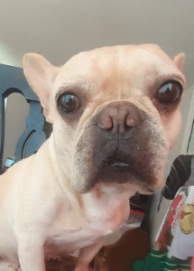

https://rxcvntscktadpgjwroxh.supabase.co/storage/v1/object/public/products/57b02552-ac97-433c-b1aa-42d241b7ac7d_main.png
Pagina de ensayo
Lulu
Preciosa y hermosa
Lulu es una perrita de raza bullgog frances con
6 años nacida el 13 de abril de 2018.
Caracteristicas de Lulu
- Ojos grandes
- Alegre
- Peleona con su hermana
- Es de caracter fuerte
Cosas favoritas de Lulu:
Dormir
Comer
Jugar
